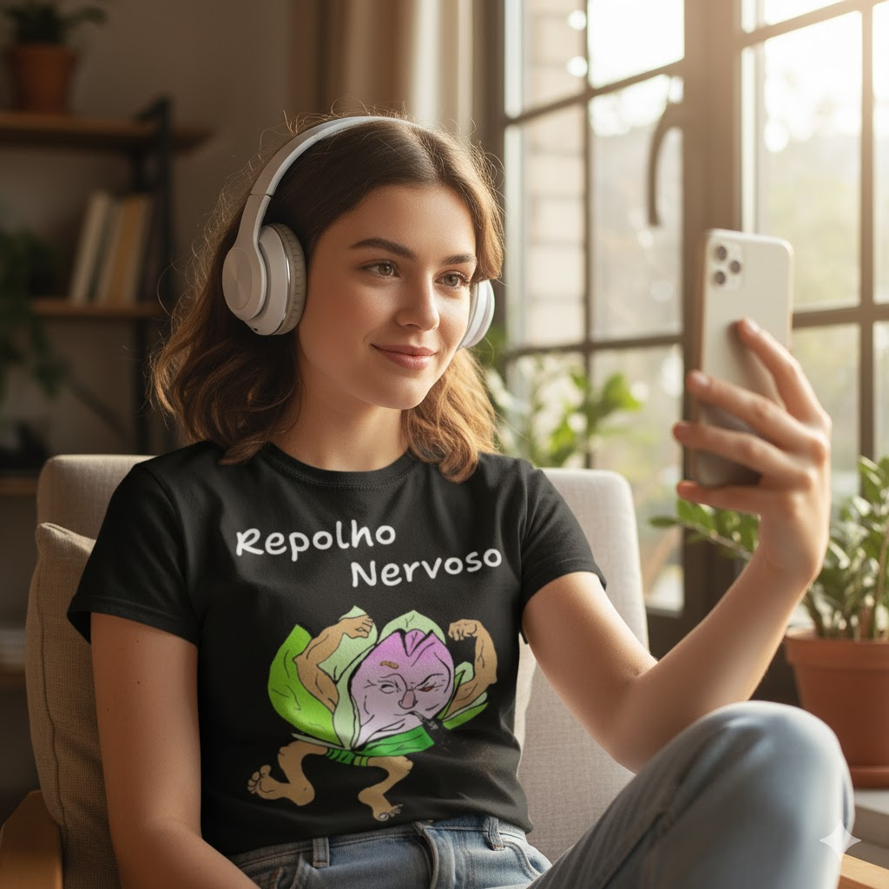
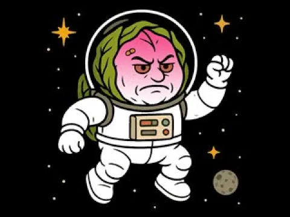

.png)
News
Por onde começar?
(Essa página é um exemplo real de como manter pessoas voltando toda semana.)
Estou iniciando a parte jornalística da lojasuperdu.com e estou sem ideias para gerar o artigo semanal. O que falar? Por onde começar?
Tenho que escrever coisas bacanas para reter a atenção e, ao mesmo tempo, conquistar novos visitantes nesse canal particular.
Me disseram apenas para começar a escrever e pesquisar assuntos relacionados ao meu público, que, nesse caso, são meus clientes.
Ex: se o negócio for uma oficina mecânica, posso escrever sobre rolamentos e lubrificantes. Se for sobre costura, posso falar sobre experiências e macetes para fazer bainha invisível.
O BrandNotify tem o botão que liga a sua empresa ao seu conteúdo, mas o conteúdo representa o que você deseja que as pessoas pensem a respeito da sua marca.
Se a pessoa voltar semana que vem… você já ganhou.
Se isso aqui chamou sua atenção…
imagina isso aparecendo toda semana no celular do seu cliente.
Exemplo real de retenção.

Dicas de comunicação
A IA pode ser certinha demais… e isso também gera fricção. Uma pessoa pode até falar errado e, ainda assim, ser altamente simpática.
Pança, panceta e esperança
Minha barriga estava virando “pança”.
A estética é a preocupação inicial, o que nem sempre gera urgência, mas, quando me falaram que eu poderia morrer...
Morrer de barriga grande??? Isso existe??? Exatamente...
A gordura visceral pode matar de feiura e do coração.
Você pode ter uma parada cardíaca ao ver que a pessoa amada está curtindo a barriga tanquinho do concorrente.
Então eu procurei saber como reduzir a “pança” e transformá-la em “panceta”. Para então voltar à “barriga” e, quem sabe, um dia, ao “tanquinho”.
Em minhas pesquisas científicas, fiquei sabendo que bastava controlar os “picos glicêmicos” para que o corpo parasse de guardar energia na forma de tecido adiposo.
Criei um plano alimentar e estou testando em mim.
Emagreci 10 kg em 90 dias e estou me sentindo feio e magrelo, porém leve e saudável.
A barriga definhou bastante, mas ela está fazendo pirraça e ainda não sumiu por completo.
Agora eu sei o quanto é difícil perder peso de forma saudável.
Breve disponibilizarei o livro dessa nova maneira de emagrecer sem passar fome.

Semana que vem.
A Gênesis do Repolho Nervoso.

Bom… por hoje é isso.
Nada muito perfeito… mas funcionando.
Se você chegou até aqui… já deu certo.